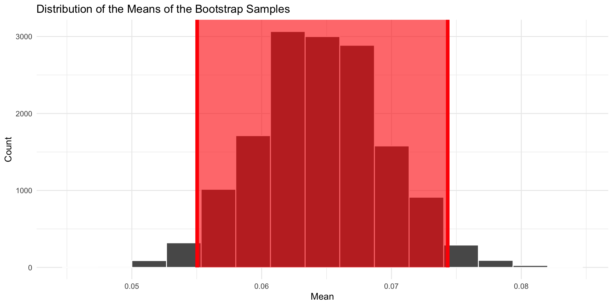
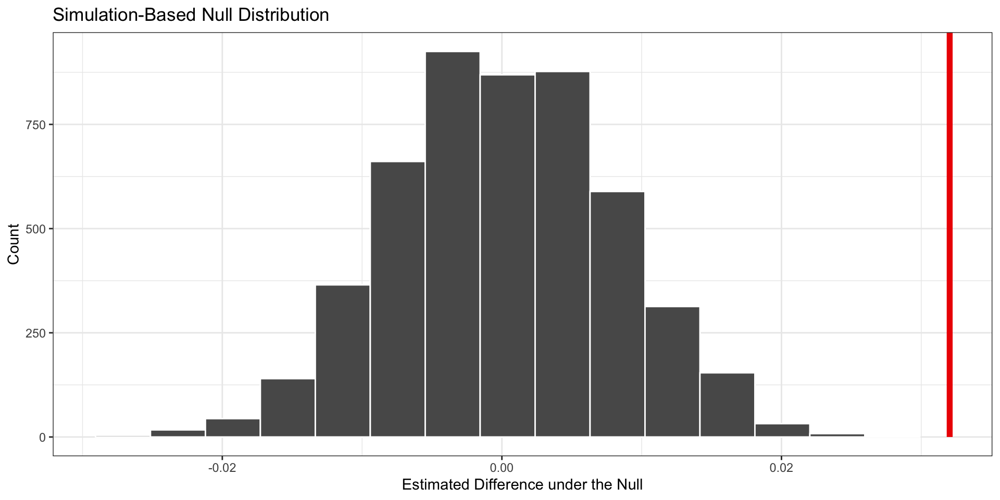

Hypothesis Testing 2
Relationship Between Two Variables
May 16, 2026
Hypotheses
- Null hypothesis: there is no relationship between treatment and outcome, the difference is due to chance
- Alternative hypothesis: there is a relationship, the difference is not due to chance
Approach
- Under the null hypothesis, treatment has NO impact on y (the outcome)
- This means that if we were to change the values of the treatment variable, the values on y would stay the same
Approach
- So…we can simulate the null distribution by:
- Reshuffling the treatment variable
- Calculating the treatment effect
- Repeating many times
- Then we can ask: how likely would we be to observe the treatment effect in our data, if there is no effect of the treatment?
Résumé Experiment Example
Bertrand and Mullainathan studied racial discrimination in responses to job applications in Chicago and Boston. They sent 4,870 résumés, randomly assigning names associated with different racial groups. - Data are in openintro package as an object called resume - I will save as myDat
Callbacks by Race
Remember, race of applicant is randomly assigned.
Let’s save the means for white and black applicants.
And calculate the treatment effect. The treatment effect is the difference in means.
Before formal tests, let’s look at the data–the estimates and the confidence intervals…
First, let’s make the CIs for the white applicants.
library(tidymodels)
boot_df_white <- myDat |>
filter(race == "white") |>
specify(response = received_callback) |>
generate(reps = 15000, type = "bootstrap") |>
calculate(stat = "mean")
lower_bound_white <- boot_df_white |> summarize(lower_bound_white = quantile(stat, 0.025)) |> pull()
upper_bound_white <- boot_df_white |> summarize(upper_bound_white = quantile(stat, 0.975)) |> pull() Now, let’s create the CIs for black applicants.
boot_df_black <- myDat |>
filter(race == "black") |>
specify(response = received_callback) |>
generate(reps = 15000, type = "bootstrap") |>
calculate(stat = "mean")
lower_bound_black <- boot_df_black |> summarize(lower_bound_black = quantile(stat, 0.025)) |> pull()
upper_bound_black <- boot_df_black |> summarize(upper_bound_black = quantile(stat, 0.975)) |> pull() Now, let’s tidy the data for plotting.
plotData <- tibble(
race = c("Black", "White"),
meanCalls = c(mean_black, mean_white),
lower95 = c(lower_bound_black, lower_bound_white),
upper95 = c(upper_bound_black, upper_bound_white)
)
plotData# A tibble: 2 × 4
race meanCalls lower95 upper95
<chr> <dbl> <dbl> <dbl>
1 Black 0.0645 0.0550 0.0743
2 White 0.0965 0.0850 0.108 Plot

Plot
Is this evidence of racial discrimination?
- What is the null hypothesis?
- What is the alternative hypothesis?
- How can we formally test the null hypothesis to decide whether to reject it?
Formal Hypothesis Test
- Calculate the difference in means (White - Black)
- Shuffle the race variable
- Calculate the difference in means for the shuffled data
- Repeat many times
- Simulates the null distribution of differences in callbacks
Hypothetical Original Data
| Applicant | Race | Callback |
|---|---|---|
| A | Black | Yes |
| B | Black | No |
| C | Black | No |
| D | White | Yes |
| E | White | No |
| F | White | No |
Step 1: Calculate Original Difference in Callback Rates
- Objective: Understand initial association between race and callback rates
Step 2: Shuffle (Permute) the Race Variable
- Method: Randomly reassign race labels, keeping callback outcomes fixed
Hypothetical Shuffled Data
| Applicant | Race (Shuffled) | Callback |
|---|---|---|
| A | White | Yes |
| B | Black | No |
| C | White | No |
| D | White | Yes |
| E | Black | No |
| F | Black | No |
Step 3: Calculate Difference in Callback Rates Again
- After Shuffling: Calculate the difference in callback rates between Black and White groups
- Purpose: Determine if observed difference is due to chance
Repeat Many Times
- Repeat shuffling 5000 times to generate a distribution of differences by chance
- Test: Compare observed difference to null distribution to assess effect of race on callbacks
- If observed difference is extreme (p-value is low), reject the null hypothesis
Simulating with tidymodels
In real life we are going to use the tidymodels package to do the simulation for us.
Get the p-value
Let’s get the p-value with get_pvalue from the infer package.
Visualize the Null Distribution

What should we conclude?
- The p-value is very small (below .05 threshold)
- Therefore, we reject the null hypothesis: the racial gap is extremely unlikely to have occurred due to chance alone
- This is evidence of racial discrimination
Your Turn!
- Use the gender variable in the
resumedata to assess whether there is gender discrimination in call backs - Plot means and 95% confidence intervals for the call back rate for men and women
- Write the null and alternative hypotheses
- Simulate the null distribution
- Visualize the null distribution and the gender gap
- Calculate the p-value
- What do you conclude from your test?